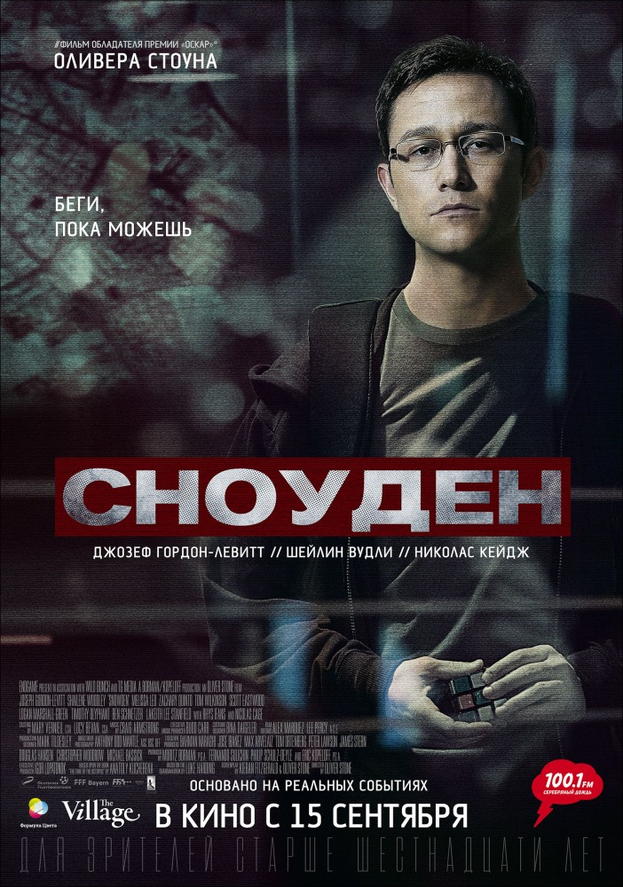
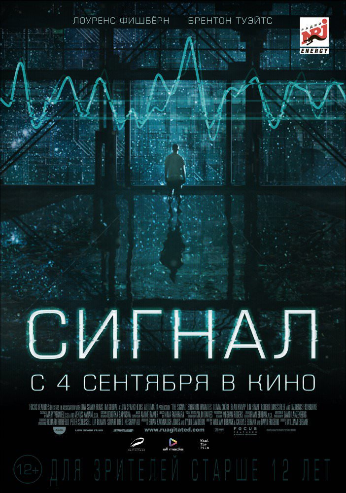
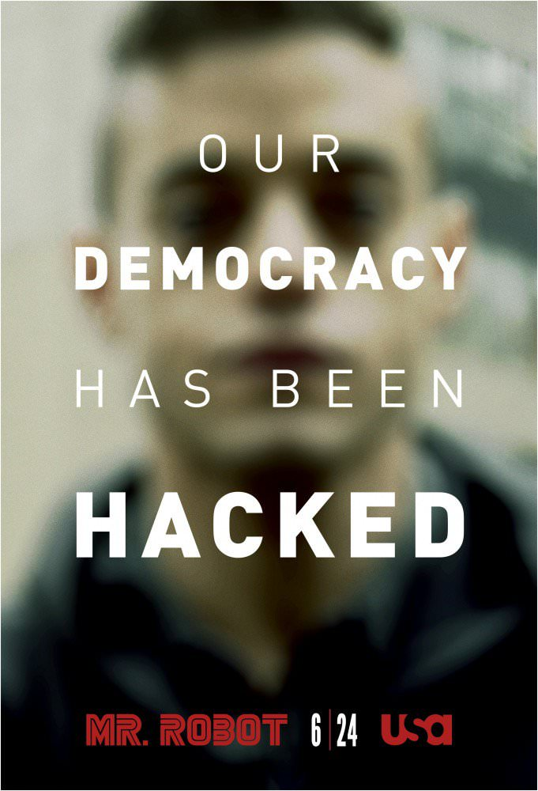

Топ фильмов
Сноуден
Он мечтал продолжить семейную традицию и посвятить свою жизнь служению Родине. Он безоговорочно верил в правительство США и поддерживал антитеррористическую программу. На заре его карьеры в спецслужбах никто, даже он сам, не мог бы предположить, что именно он, Эдвард Сноуден, совершит самое крупное разоблачение в мировой истории, обнародовав секретные документы, касающиеся тотальной слежки США за своими гражданами и гражданами других государств. Открыв миру глаза на правду, он навсегда закрыл для себя двери в счастливое будущее: отказался от карьеры, любимой девушки и Родины, которая назвала его предателем…

Сигнал
Трое студентов-хакеров неожиданно начинают получать таинственные сообщения от незнакомца под ником NOMAD (Кочевник). Но они даже не подозревают, с чем имеют дело.После серии необъяснимых происшествий друзья бегут из опасной ловушки, но тут же становятся объектами охоты «людей в чёрном», которые считают, что после контакта хакеры могут представлять угрозу для всего человечества.

Мистер Робот
История молодого программиста Эллиота, страдающего социофобией и решившего, что единственный приемлемый для него способ взаимодействия с людьми — это профессия хакера. Таким образом, он быстро оказывается в том самом месте, где пересекаются интересы его работодателя — фирмы, занимающейся кибербезопасностью, — и подпольных организаций, которые пытаются его завербовать с целью обрушения самых могучих американских корпораций.

Игра в имитацию
Английский математик и логик Алан Тьюринг пытается взломать код немецкой шифровальной машины Enigma во время Второй мировой войны.
Силиконовая долина
История о группе гиков, готовящих к запуску собственные стартапы в высокотехнологичном центре Сан-Франциско.Главные герои сериала бесплатно проживают в доме местного миллионера, но взамен им придётся отдать по 10% прибыли от будущих проектов.